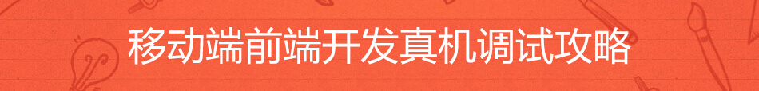

GEEK SALON
技术分享
用video.js开发HTML5播放视频

最近公司有一个新的需要,通过微信分享,在微信或手机浏览器中打开视频,这个视频有分直播和录播/回放,如果是直播,采用的是腾讯云上路演的js-SDK,而录播/回放我自己采用的是video.js这个插件,video.js在目前同类插件中热门排行第一,相关文档也比较齐全,并且大部分能兼容IOS和Android手机的浏览器。阅读全文>>
- 发表时间：2016-06-22 13:32:11
- 503浏览
- 分享到：

移动端前端开发真机调试攻略
最近一直在做用HTML5开发移动端页面,有些效果只有在真实的手机上测试才好调试,所以今天就在网上查了一下相关的调试方法,终于让我找到了一些特别好的方式。 下面是在网上找到的内容,根据现在的情况我自己做了一下整理。 阅读全文>>
- 发表时间：2016-6-24 15:32:11
- 503浏览
- 分享到：

工作项目 创交会 总结
7月初,工作内容是做一个创交会项目,虽然我不知道这个创交会对企业来说有多大用处,但是,通过这段时间做这个项目,感觉自己学到了很多东西,也应用了很多新的技术, 今天就花一些时间好好整理、总结一下。 阅读全文>>
- 发表时间：2016-07-11 16:24:34
- 503浏览
- 分享到：
关于如何禁止 iPhone Safari 视频自动全屏？
如果在工作中有遇到过用HTML5开发视频播放的需求,估计有同学会知道webkit-playsinline这个属性。微信支持这个属性，但是safari 10以下的版本是不支持的，而2016.6.16更新了IOS10,原生的支持了。 不过我打开自己的iphone 6+,翻了好久,一直没有找到在哪里看版本。safari 10以下的版本播放视频只能全屏，所以这个问题是没有答案的。 阅读全文>>
- 发表时间：2016-06-24 17:20:11
- 503浏览
- 分享到：
前端包管理、构建、模块打包等工具的总结
前端包管理、构建、模块打包等工具的总结,npm、gulp、grunt、fix、browserify、webpack、bower、yeoman、component、duo等等阅读全文>>
- 发表时间：2015-10-9 13:32:11
- 503浏览
- 分享到：